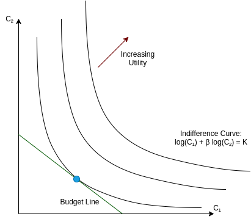

Exercise 2: Intertemporal Consumption
We consider one representative agent. He receives income \(Y_1\) in period 1 and \(Y_2\) in period 2. In each period agent can consume \(C_1\) and \(C_2\). There is no inflation but he can save from period 1 to period 2 at (real) interest rate \(r\). In choosing consumption levels the agent seeks to maximize \(U(C_1, C_2) = log(C_1) + \beta log(C_2)\) where \(\beta\) is the time preference discount such that \(0<\beta<1\).
A. Ricardian Agents
- Explain why intertemporal budget constraint can be written as \((1+r) C_1 + C_2 \leq (1+r) Y_1 + Y_2\).
At the end of period 1, agent saves \(Y_1-C_1\) which yields \((Y_1-C_1)(1+r)\) to be consumed in the second period. Note that this quantity can potentially be negative if agent can borrow. In the second period, consumption must be lower than total available income, which yields the budget constraint:
\[C_2 \leq (Y_1-C_1)(1+r) + Y_2\]
It can be rewritten as:
\[C_1 (1+r) + C_2 \leq Y_1 (1+r) + Y_2\]
In this equation, the right hand side represents total, intertemporal, income. The left-hand side is total spending where “price” in period 1 is \(1+r\). It is \(1\) in period 2.
- In the plane \((C_1, C_2)\) represent indiference curves (aka isoutility curves). Graphically, what is marginal rate of substitution between goods 1 and 2? Compute it, using the functional form for U.

A particular indifference curve is characterized by equation
\[log(C_1) + \beta log(C_2)=K\]
where \(K\) is a constant. To compute the marginal rate of substitution \(\frac{\partial C_2}{\partial C_1}\) along the curve, we can differentiate this equation to get:
\[\frac{1}{C_1}\partial C_1 + \beta \frac{1}{C_2} \partial C_2=0\]
from which we get:
\[\left. \frac{\partial C_2}{\partial C_1} \right|_{\text{indifference curve}} = -\frac{1}{\beta}\frac{C_2}{C_1}\]
\(\frac{\partial C_2}{\partial C_1}\) is the slope of the indifference curve at a given point \((C_1, C_2)\). It is also called the marginal rate of substitution.
We can also provide the precise equation for an indifference curve, by using the relation above to get:
\[log(C_2) = \frac{K- log(C_1)}{\beta}\]
or
\[C_2 = exp(\frac{K}{\beta})C_1^{-\frac{1}{\beta}}\]
- In the same plane, represent the budget line. How would you characterize, graphically, the optimal consumption choice? Compute the derivative of the budget line and show that optimal consumption choice is characterized by: \(\frac{1/C_1}{\beta /C_2}=\frac{1+r}{1}\). That equation is called Euler equation.
If the budget constraint was not binding it would be possible for the agent to consume more in both periods, which can’t be optimal. Hence it must be binding and the optimal choice must be on the budget line:
\[(1+r) C_1 + C_2 = Y_1 (1+r) + Y_2\]
At the optimal choice, the budget constraint must be a tangent of the indifference curve (see micro course). In particular, it needs to have the same slope. We obtain the slope of the budget constraint by differentiating the above equation:
\[(1+r) \partial C_1 + \partial C_2 = 0\]
or
\[\left. \frac{\partial C_2}{\partial C_1} \right|_{\text{budget constraint}}= -(1+r)\]
The identity:
\[ \left. \frac{\partial C_2}{\partial C_1} \right|_{\text{budget constraint}} = \left. \frac{\partial C_2}{\partial C_1} \right|_{\text{indifference curve}}\]
leads to 1 Euler equation:
\[\beta (1+r) \frac{1}{C_2} = \frac{1}{C_1}\]
- Using Euler equation, comment on the effect of parameters \(r\) and \(\beta\)
Lower subjective discount \(\beta\) or lower real interest rate \(r\) both tend to discount future consumption and tilt consumption towards the present: it corresponds to a reduction in \(\frac{C_2}{C_1}\).
- Assuming the budget constraint is binding (both sides are equal) and combining it with the Euler equation, compute optimal consumption in period 1, and in period 2.
To get the actual consumption, we can combine the Euler equation to substitute \(C_2\) in the budget line:
\[(1+r) C_1 + \underbrace{\beta (1+r) C_1}_{C_2} = Y_1 (1+r) + Y_2\]
from which we obtain:
\[C_1 = \frac{1}{1+\beta} \left( Y_1 + \frac{1}{1+r }Y_2 \right)\]
It is the same formula as in the course.
Using budget constraint again, we get consumption in period 2:
\[\begin{aligned}C_2 &=& (1+r)Y_1 + Y_2 - \underbrace{(1+r) \frac{1}{1+\beta} \left( Y_1 + \frac{1}{1+r }Y_2 \right)}_{C_2}\\ &=&\frac{\beta}{1+\beta}\left( (1+r)Y_1+Y_2\right) \end{aligned}\]
- What is the marginal propensity to consume out of temporary income shock (increase in \(Y_1\) only).
Using the formula for \(C_1\), we find that that a an increase in \(Y_1\) by \(\Delta Y_1\), leaving \(Y_2\) unchanged, increases consumption by:
\[\Delta C_1 = \frac{1}{1+\beta} \Delta Y_1\]
so that the marginal propensity to consumer out of a temporary income shock is :
\[\frac{\Delta C_1}{\Delta Y_1} = \frac{1}{1+\beta}\]
If agent is rather patient (\(\beta \approx 1\)), marginal propensity to consume is about \(50\%\).
- How does consumption react to interest rate?
To get the sensitivity with respect to an increase in the interest rate \(\Delta r\), we must differentiate the expression for \(C_1\) to get:
\[\Delta C_1 = -\frac{Y_2}{(1+r)^2} \Delta r\]
Semi-elasticity is the percentage of consumption divided by the increase in interest rate (in level):
\[\frac{\frac{\Delta C_1}{C_1}}{\Delta r} = -\frac{Y_2}{C_1}\frac{1}{(1+r)^2} = - \frac{Y_2}{\frac{1}{1+\beta} \left( Y_1 + \frac{1}{1+r }Y_2 \right)} \frac{1}{(1+r)^2}\]
B. Non Ricardian Agents (consumption fueled with borrowing)
- We now assume the agent faces a borrowing constraint in period 1 in the form \(C_1 - Y_1\leq \kappa Y_1\). How would you interpret \(\kappa\)? Compare with the “keynesian” agents defined in the course.
The borrowing constraint:
\[C_1 - Y_1\leq \kappa Y_1\]
states that the loan to income ratio must be smaller than \(\kappa\):
\[\frac{\overbrace{C_1 - Y_1}^{\text{loan}}}{\underbrace{Y_1}_{\text{income}}}\leq \kappa\]
Assuming the agent is constrained the consumption is directly given by:
\[C_1 = (1+\kappa)Y_1\]
The agent is keynesian according to the definition given in the course: it consumes as much as it can. However, the example given was that of a “basic” agents, who cannot borrow, with consumption being given by: \[C_1=Y_1\].
- Take the result for the optimal consumption from part 1. At which condition does it satisfy the borrowing constraint?
The desired consumption was defined in question assuming agent is not constrained. The constraint will bind if desired consumption is higher than maximum consumption:
\[\underbrace{ (1+\kappa)Y_1}_{\text{maximum consumption}} \leq \underbrace{\frac{1}{1+\beta} \left( Y_1 + \frac{1}{1+r }Y_2 \right)}_{\text{desired consumption}} \]
\[Y_1 \leq \left(\frac{1}{1+\kappa-\frac{1}{1+\beta}} \frac{1}{1+\beta} \frac{1}{1+r }\right) Y_2 \]
We find that agent is constrained if income in the first period is too small. The higher the kappa, the higher the ability to borrow, and the lower the required income in period 1.
- What it is the marginal propensity to consume when the borrowing constraint is binding? How does it depend on \(\kappa\)?
By differentiating constrained consumption:
\[\Delta C_1 = (1+\kappa) \Delta Y_1\]
we get the marginal propensity to consume by
\[\frac{\Delta C_1}{\Delta Y_1} = (1+\kappa)\]
- Comment.
We can see that the ability to borrow increases the marginal propensity to consume since additional income allows for direct spending and for additional spending fueled by borrowing.
C. Non Ricardian Agents (consumption fueled with house prices)
Let’s denote by \(H=(1+\frac{1}{r})H_0\) the value of a house owned by an agent where \(H_0\) is a fixed constant. We consider the borrowing constraint in period 1 in the form \(C_1 - Y_1\leq \nu H\) where \(\nu\) is a collateral coverage ratio. We assume that constraint is binding.
- What is the marginal propensity to consume?
Now constrained consumption is given by:
\[C_1 = Y_1 + \nu H\]
with \(H=H_0\frac{1}{r}\)
Marginal propensity to consume is
\[\frac{\Delta C_1}{\Delta Y_1} = 100\%\]
as for the baseline agent.
- How does consumption react to a change in interest rates \(\Delta r\)?
The change in consumption following a change in interest rate is:
\[\Delta C_1 = \nu \Delta H = - \nu H_0 \frac{1}{r^2} \Delta r\]
- Comment.
Looking at ratio:
\[\frac{\Delta C_1}{\Delta r} = - \nu H_0 \frac{1}{r^2} \]
we see that borrowing against the collateralized value of a house, makes consumption very dependent on interest rates. This is one of the reason for why the central banks hesitate to increase rates too fast when many consumers have collateralized mortgages.
Footnotes
In microeconomics, when the choice is made between two goods at prices \(p_1\) and \(p_2\), with overall utility \(U(C_1, C_2)\), the optimality condition is \(\frac{U^{\prime}_{C_2}}{U^{\prime}_{C_1}}=\frac{p_2}{p_1}\). Here we can set \(p_1 = (1+r)\), \(p_2=1\) and we have \(U(C_1, C_2)=log(C_1) + \beta log(C_2)\) so that \(U^{\prime}_{C_1}=\frac{1}{C_1}\) and \(U^{\prime}_{C_2}=\beta \frac{1}{C_2}\).↩︎